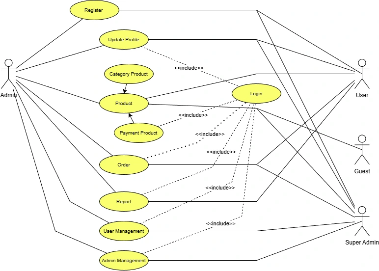
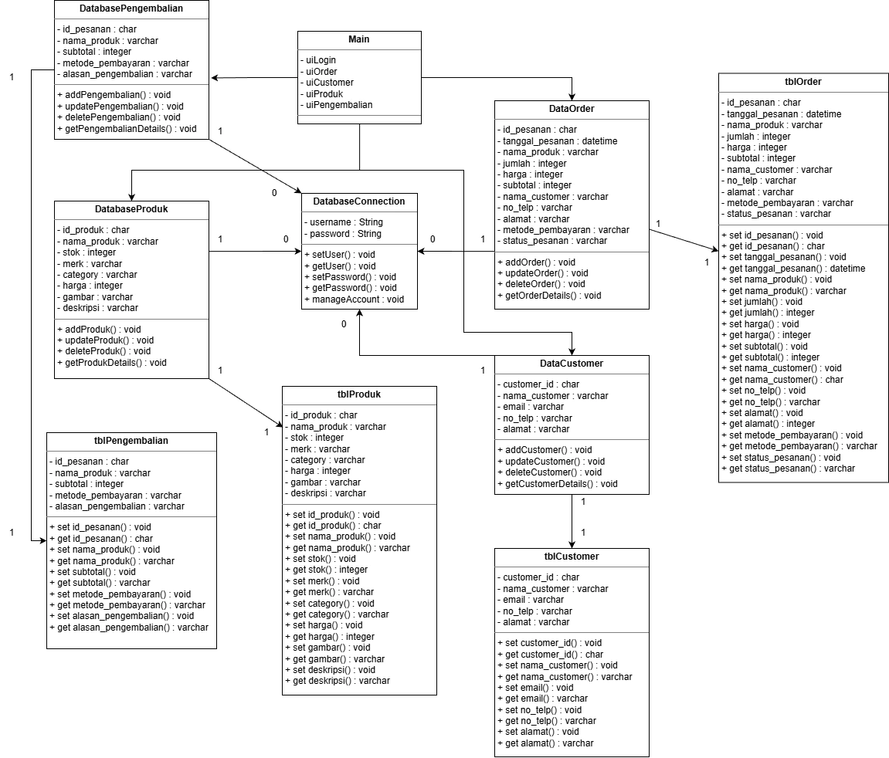
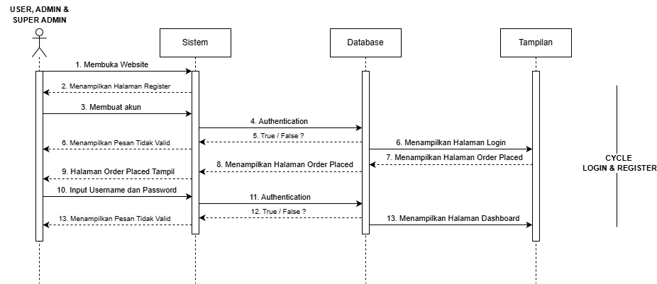
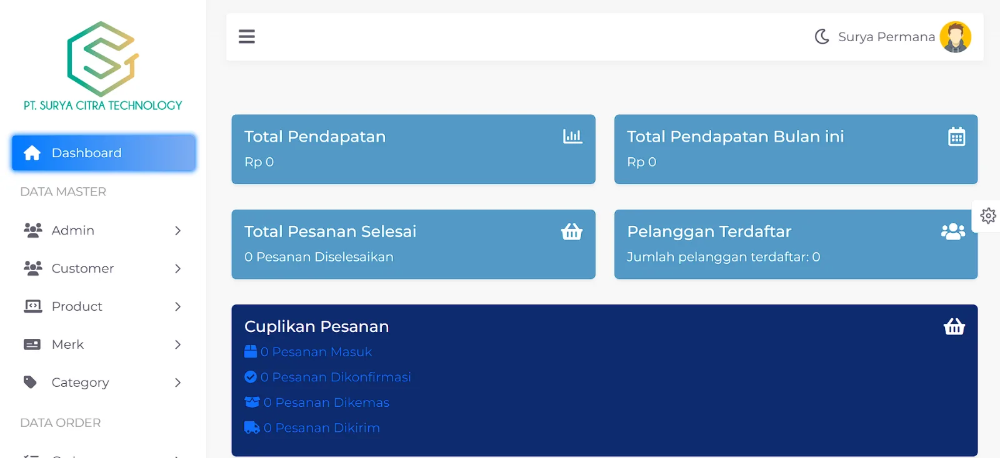

SCT E-Commerce
Website e-commerce B2B untuk PT Surya Citra Teknologi, berfokus pada pengelolaan produk, checkout, dan pembayaran online.
01Konteks
Toko antar-bisnis tempat klien mengelola katalog produknya, dan pelanggan memesan serta membayar secara online.
02Desain
Sebelum membangun, saya memetakan aktor dan tujuannya, struktur data, dan interaksi utama:



03Tampilan

